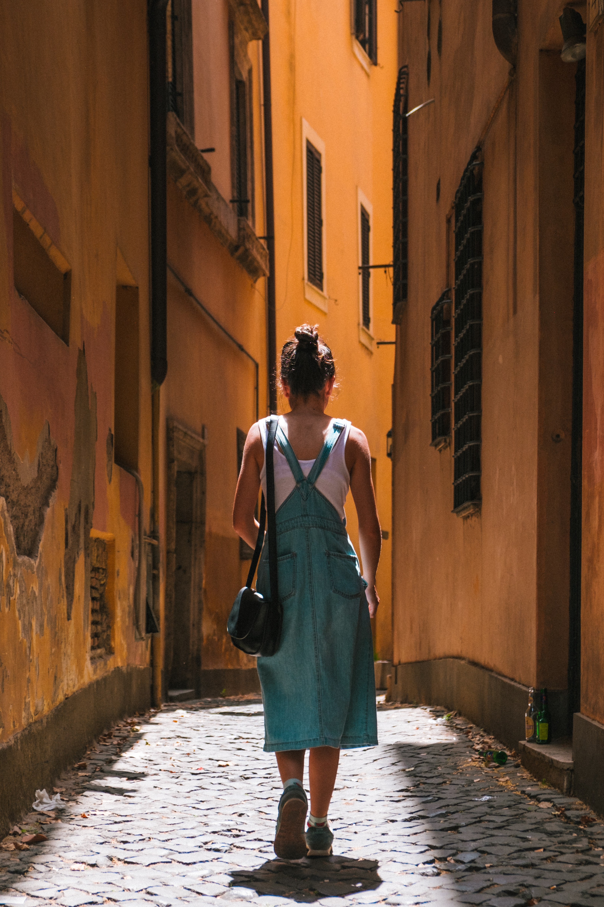

Here are a few tips for solo traveling safely.
Keep posessions while traveling minimal and secure. Image credit: Ilnur Kalimullin/Unsplash
When I tell people I traveled solo in Europe for two months, I get mixed reactions.
Some people say that it sounds amazing, others say they couldn’t imagine themselves taking that kind of risk, and many ask how I did it. Solo traveling comes with some challenges and difficulties, and a good amount of planning, but also with huge rewards. Especially as a woman, it is important to consider precautions for traveling on your own, but it is certainly very doable and safe if done correctly. Exploring new places, making friends across the globe, and having new experiences is well worth the planning and precautions of solo traveling.
1. Do your research and pick a safe country
It is important to thoroughly research the country you are planning to visit before buying your tickets. Research safe places to visit, and look up the particular address you will be staying for safety ratings. It’s also a good idea to travel during the day and to ensure that you’ll have cell phone service with a new SIM card or data plan for the country you’re visiting.
2. Get travel insurance
Travel insurance is a relatively small expense that can save you thousands if a trip is canceled or you get into an accident. There are many types of travel insurance, and getting can be extremely helpful if anything should happen with your flight, accommodations, or belongings. For less expensive trips, travel insurance for the actual trip may not be necessary. At the very least, make sure you are covered with medical travel insurance for the duration of your trip in case you need to see a doctor while in another country.
3. Don’t “act like a tourist”
If you’re walking alone, especially at night or in a crowded location, try and appear like you know what you’re doing. You will be less likely to get pick-pocketed or targeted if you don’t look like a tourist.
4. Keep your valuables secure
Leave any expensive valuables. It’s a smart idea to only take what you need while traveling, and leave the rest safely secured at home or in a storage unit. Keep your phone and wallet in secure and easily accessible places without flaunting them.
5. Travel with a friend
You don’t necessarily need to travel alone, even when you’re solo traveling. Make travel buddies online or along the way or meet up with other friends who are traveling. Check in with those at home to update them on your location and safety.